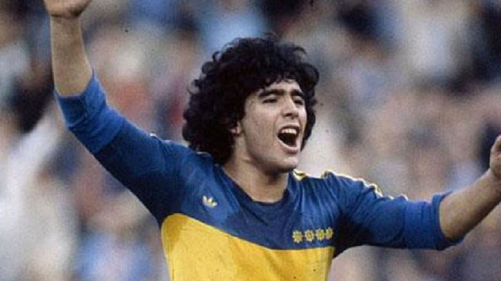
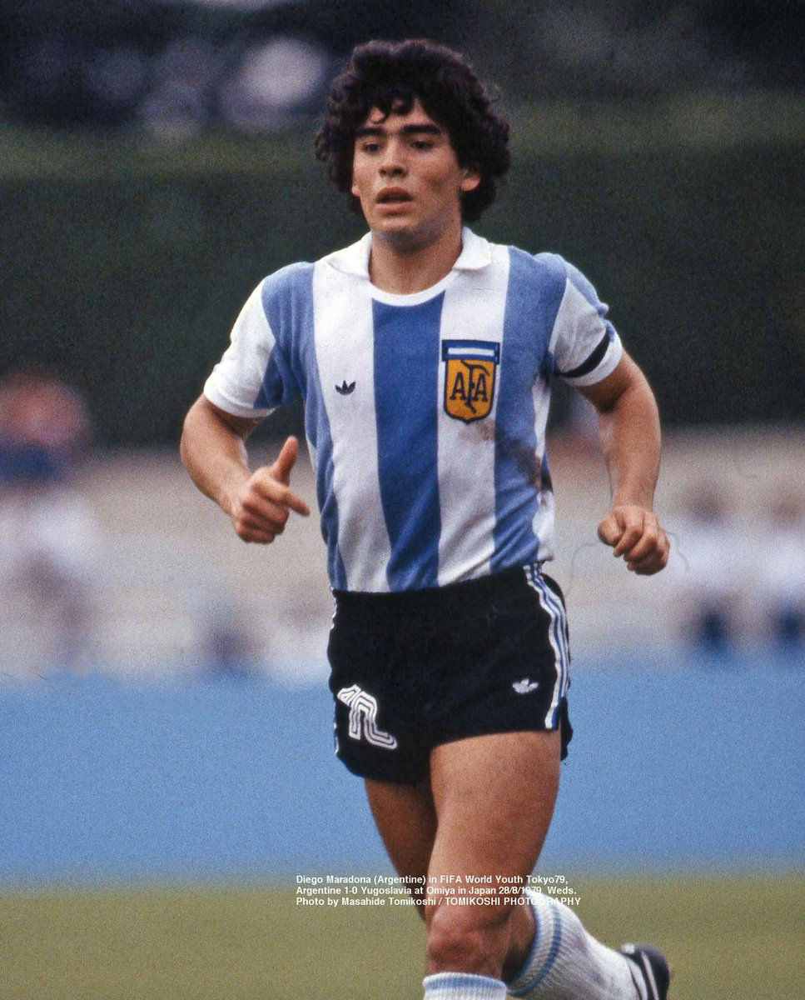
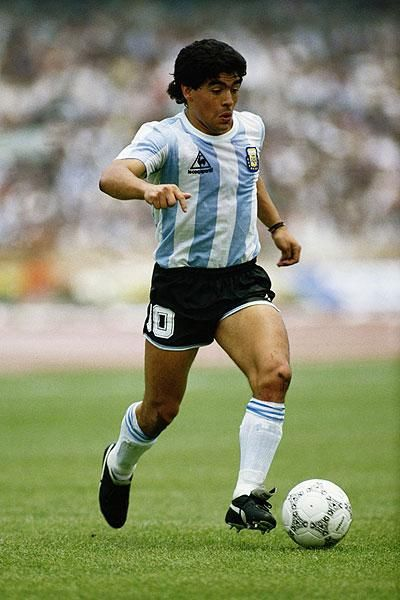
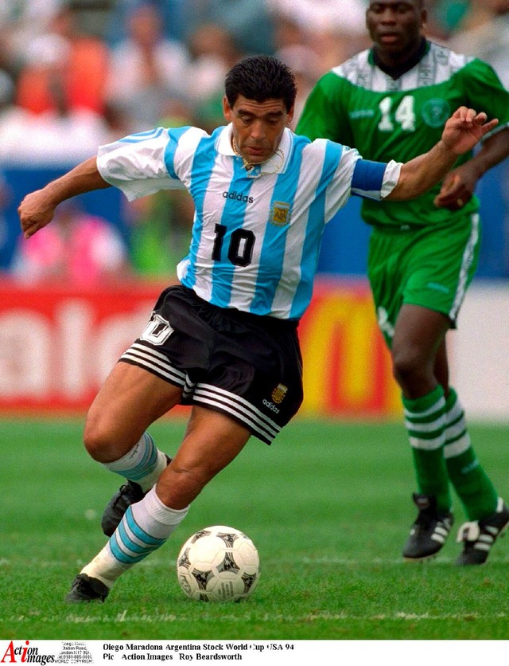

La Carrera Deportiva del 10
El Comienzo del sueño
Maradona nació el 30 de octubre de 1960 en el Hospital Interzonal de Agudos Evita, de Lanús Oeste, de manera circunstancial. Fue el quinto de ocho hijos, y el primer varón, del matrimonio entre Diego Maradona (1927-2015) y Dalma Salvadora "Tota" Franco (1930-2011). Sus hermanos fueron Ana María, Rita "Kitty", Elsa "Lili", María Rosa "Mary", Claudia "Cali", Raúl y Hugo, estos últimos también fueron futbolistas. Su familia, originaria de Esquina, provincia de Corrientes y de ascendencia gallega, estaba afincada en Villa Fiorito, partido de Lomas de Zamora, localidad ubicada en el primer cordón de la zona sur del conurbano bonaerense. Desde los primeros momentos en que jugó a la pelota, se inclinó a la práctica del fútbol ofensivo.
Ver Mas
Argentinos Juniors (1976-1980)
El debut de Maradona con Argentinos Juniors ya generaba alta expectativa en el club, aunque tuvo que ser retrasado, debido a que tuvo que pagar una suspensión de cinco fechas por una expulsión en un partido ante Vélez por la séptima categoría de juveniles. "Yo tengo la costumbre de hablar demasiado en la cancha. El referí me echó después del final y me dieron cinco fechas de suspensión" recordó Maradona años después.40
Su debut finalmente se produjo el 20 de octubre de 1976, a diez días de cumplir los 16 años de edad, por un partido del Campeonato Nacional, oportunidad en que su equipo Argentinos Juniors enfrentaba a Talleres, uno de los mejores equipos del país en ese momento.
Maradona era suplente, y en el entretiempo el entrenador del equipo, Juan Carlos Montes, le pidió que ingresara y realizara un «caño» —pasar la pelota por entre las piernas a otro jugador—. Ingresó con la camiseta número 16, como reemplazante de Rubén Aníbal Giacobetti al comenzar el segundo tiempo. En la primera jugada que participó le realizó un caño a Cabrera, marcador central de Talleres, entusiasmando a la hinchada local.
Ver Mas
Boca Juniors 1981
Aunque Maradona ya había recibido anteriormente ofertas para jugar en otros clubes, como el América de Cali colombiano, y el Sheffield United inglés, recién en 1981 se encontraba decidido a abandonar Argentinos Juniors, debido a sus constantes peleas con la directiva. La oferta más importante la había realizado River Plate, quien además le ofrecía ganar el mismo dinero que el jugador mejor pago del club, Ubaldo Fillol. Sin embargo, Maradona acabaría siendo transferido a su máximo rival, Boca Juniors, un club que pasaba por una mala situación económica y no se encontraba en condiciones de comprar su pase.
Durante esas semanas, declaró a un medio argentino que le habían quitado la "ilusión de jugar en River". Esta frase provocaría polémicas y debates entre cual club Maradona realmente quería jugar. Tiempo después, Diego admitió que dijo eso únicamente para hacer presión para que el club xeneize lo acabe fichando, ya que en reiteradas ocasiones había mencionado su afición por parte de él y su familia hacia el equipo. Finalmente, fue cedido a préstamo por un año y medio a Boca, que se reservaba la opción de compra.
Ver Mas
F.C Barcelona (1982-1984)
Tras su participación en la Copa Mundial de Fútbol, en la que la selección argentina se hospedó en Barcelona, se oficializó su venta al Fútbol Club Barcelona. El club pagó 1200 millones de pesetas por su pase, el 80% del dinero fue para Argentinos Juniors que era dueño de su pase y el resto para Boca Juniors, que había recurrido a la justicia, para que desistiera de su accionar y se pudiese hacer el pase al exterior de la Argentina una cifra importante para la época. Maradona apareció por primera vez con la camiseta del Barcelona el 3 de agosto de 1982, en el estadio Hindenburg de Meppen en un amistoso contra el SV Meppen. El primer partido oficial fue el 4 de septiembre de 1982, donde, pese a que convirtió un tanto, su equipo cayó con Valencia por 2 a 1. En diciembre de 1982, habiendo disputado 13 partidos de la Liga y marcado 6 goles, se le detectó una hepatitis, por lo que debió abandonar los campos por tres meses. Se perdió 14 partidos de Liga y las eliminatorias de la Recopa de Europa, en la que el Barcelona, mermado por su ausencia, quedó eliminado. El entrenador alemán Udo Lattek, con el que Maradona había tenido diversas discusiones, fue destituido, y la directiva contrató como nuevo entrenador al argentino César Luis Menotti.
Ver Mas
Napoli (1984-1991)
La oferta original del Napoli era un partido amistoso ante el Barcelona, con la idea de verlo jugar a Maradona en Italia. Aunque en un principio el Barcelona aceptó el partido, luego les confirmó a los italianos que Maradona no podía asistir porque estaba "enfermo", aunque en realidad querían evitar una posible lesión, que se había vuelto un problema constante para Diego en el club español. El presidente del Napoli, Corrado Ferlaino, afirmó que luego le habían dicho que en realidad Maradona estaba peleado con la dirigencia del Barcelona, por lo que Ferlaino aprovechó para realizar una oferta. Finalmente, el 29 de junio de 1984, se confirmó el pase de Maradona al Nápoles por 1.3 millones de pesetas (8 millones de euros) y cuatro años de contrato.
Ver Mas
Sevilla (1992-1993)
El 1 de julio de 1992 vencía la suspensión de 15 meses impuesta por la FIFA y su pase estaba todavía en poder del Nápoles, club que buscaba su reincorporación al plantel. Pero Maradona quería alejarse de Italia y jugar para un club que no tuviera grandes exigencias deportivas. Las primeras conversaciones para su traspaso fueron con el Sevilla y el Olympique de Marsella, inclinándose finalmente por el primero, quien pagó la suma de 5,70 millones de euros por el pase cuya gran parte la pagó la actual empresa Mediaset de Silvio Berlusconi. Sin embargo ante la negativa del Nápoles de autorizar su traspaso, se pidió la intervención de la FIFA para destrabar el conflicto, lo que ocurrió el 22 de septiembre de 1992.
Maradona fichó por el Sevilla debido a la insistencia del entrenador argentino Carlos Bilardo, entonces entrenador del conjunto sevillano. Sin embargo, Maradona todavía necesitaba la autorización judicial para salir del país, debido al problema que había tenido el año anterior en su departamento del barrio de Caballito. Luego de ser autorizado por la jueza de la causa, pudo negociar su contrato y se incorporó al Sevilla una vez iniciada la Liga de la temporada. Su presentación ocurrió el 28 de septiembre en un partido amistoso contra el Bayern Múnich, equipo en el que jugaba su amigo Lothar Matthäus.
Ver Mas
Newell's Old Boys (1993-1994)
En 1993 se produjo su vuelta al fútbol argentino, esta vez con la camiseta de Newell's Old Boys. Pero en un principio las negociaciones estaban encaminadas para su regreso a Argentinos Juniors, hasta que se produjo un episodio que arruinaría la negociación y determinaría su incorporación a Newell's: fue amenazado por un grupo de barras bravas del "Bicho" que exigían la entrega de 50 000 dólares. A su vez, San Lorenzo de Almagro estuvo a punto de contratarlo a través de su amigo, Oscar Ruggeri, quien formaba parte en aquel entonces del club. Sin embargo, las diferencias con el presidente Fernando Miele hicieron que la negociación se cayera a último momento. El 13 de septiembre de 1993 llegó el primer entrenamiento y 40 000 personas se habían reunido a verlo, en medio de una fiesta organizada por el entrenador Jorge Raúl Solari. El 7 de octubre de 1993 se realizó un partido amistoso de celebración por el debut de Maradona con la camiseta de Newell's, frente a Emelec de Ecuador. Su debut oficial se produjo el 10 de octubre, perdiendo 3 a 1 contra Independiente de visitante. Maradona jugaría además los partidos contra Belgrano, Gimnasia y Esgrima La Plata, Boca Juniors y Huracán. Durante este último partido, disputado el 2 de diciembre de 1993, sufre un desgarro muscular que lo alejaría unas semanas del terreno de juego. A esta altura del campeonato Solari había dejado la conducción técnica, y su relación con el nuevo técnico, Jorge Castelli, no era buena, ya que no le permitía algunas licencias que había pactado con el anterior entrenador, además de que había sido quien le había cerrado las puertas en San Lorenzo. Ésta fue una de las razones que precipitó la ida de Maradona, cuyo último partido en el club fue un amistoso contra Vasco da Gama jugado el 26 de enero de 1994. Jugó en Newell's Old Boys cinco partidos oficiales, sin convertir goles.
Ver Mas
Regreso a Boca Juniors (1995-1997) y retiro
Tras estar los primeros meses de 1994 sin club, y sancionado durante toda la temporada 1994-95, el sueño de Maradona para su vuelta al fútbol era ser técnico y jugador de Boca Juniors, pero existían dos problemas importantes; el primero era que en ese entonces la conducción técnica estaba nuevamente a cargo de Silvio Marzolini, y la dirigencia no tenía interés en despedirlo. El segundo era económico, la situación financiera en la que se encontraba el club no permitía el pago de las sumas a las que él estaba acostumbrado. El primero fue solucionado por iniciativa de Maradona, ya que desistió de convertirse en técnico, y el segundo por iniciativa de varios empresarios dispuestos a aportar dinero, entre los que se encontraba Eduardo Eurnekian.
Ver Mas
Segundo Regreso a Boca Juniors
A pocos días de dejar la actividad, Maradona viajó a Suiza para internarse en una clínica que lo ayudaría con su adicción a la cocaína. Pero el médico que lo atendía dio una conferencia de prensa contando detalles de su internación, lo que propició su regreso a Buenos Aires. Los problemas de salud no quedarían atrás, el 7 de abril de 1997 debió ser ingresado en un hospital luego de sufrir un problema de presión sanguínea durante un programa de televisión chileno llamado Viva el lunes conducido por Cecilia Bolocco, Álvaro Salas y Kike Morandé transmitido por Canal 13.
Ver Mas
El Retiro

A pesar de encontrarse habilitado para jugar, en un partido frente a Colo-Colo por la Supercopa sufrió una lesión que lo mantendría en inactividad durante varios días. Volvería a jugar recién el 25 de octubre de 1997, en el partido que Boca Juniors derrotó como visitante a River Plate por 2-1, siendo reemplazado en el entretiempo por Juan Román Riquelme. Ese sería además su último partido oficial, ya que anunció su retiro del fútbol profesional el mismo día de su cumpleaños número 37, el 30 de octubre.
La Despedida.
La Bombonera. 10 de noviembre de 2001. El mundo del fútbol se congregó en honor a Diego Maradona, quien hace 21 años disputaba su partido despedida, cargado de emociones e inmortalizando una de sus frases: “La pelota no se mancha”.
Ver el partido Homenaje al 10La Pelota no se mancha.
“El fútbol es el deporte más lindo y más sano del mundo. De eso que no le quepa la menor duda a nadie. Porque se equivoque uno, no tiene que pagar el fútbol. Yo me equivoqué y pagué, pero la pelota no se mancha”.
La Seleccion Argentina
  Primeras convocatorias y campeón del Mundial Juvenil (1978-1979)
A pesar de haber jugado varios partidos para la selección durante 1978, en ese año César Luis Menotti no lo convocó para jugar el Mundial debido a su juventud. Maradona se encontraba concentrado junto a otros veinticuatro jugadores en un predio ubicado en José C. Paz, utilizado por la Asociación del Fútbol Argentino como lugar de entrenamiento, cuando el 19 de mayo de 1978 Menotti le comunicó que no iba a tenerlo en cuenta para el mundial que se disputaría en la Argentina; en su posición de juego fueron convocados Alonso, Villa, y Valencia; curiosamente, Bochini, admirado por Maradona, tampoco quedó convocado para el certamen. Tras esa decepción, se reintegró al plantel de Argentinos que debía jugar contra Chacarita Juniors. En ese partido convirtió dos goles y dio dos asistencias, que sirvieron para el triunfo por 5:0 del equipo de La Paternal.
Ver Mas
Primer Mundial y fracaso en España 82 (1981-1982)
La preparación para España 82 incluyó una concentración de cuatro meses. Antes de comenzar el Mundial, el pase de Maradona al FC Barcelona ya se había concretado, por lo que en España existía mucha expectativa por el rendimiento del jugador Argentino. Esa misma expectativa existía en la Argentina con la selección, ya que los logros obtenidos en el Mundial anterior y en el Mundial Juvenil entusiasmaban a los fanáticos del fútbol.
Ver Mas
Campeón mundial en México 1986
Tras el Mundial de 1982 se produjeron varios cambios en la selección argentina. El más importante fue el cambio de la dirección técnica, ya que Carlos Salvador Bilardo había reemplazado a Menotti. El segundo fue un cambio en la capitanía: mientras que el capitán representativo durante la era Menotti fue Daniel Passarella, durante la era Bilardo sería Maradona; esta sería una de las razones que, años después, iniciaría una pelea entre ambos. Sin embargo, desde su expulsión en la segunda ronda del Mundial, el 2 de julio de 1982, hasta el 10 de mayo de 1985 no disputó ningún partido para la albiceleste, debido a que Bilardo quería armar su equipo con jugadores que se desempeñaban en el fútbol argentino. El regreso, tras casi tres años de ausencia, se produjo en un amistoso contra el seleccionado paraguayo disputado en Buenos Aires, en preparación para las eliminatorias de la Copa Mundial de Fútbol de 1986. El encuentro finalizó con un empate 1:1, con un gol de Maradona.
El grupo en el que Argentina debía conseguir la clasificación estaba compuesto por Venezuela, Colombia y Perú. El debut se produjo el 26 de mayo, en un duro partido contra Venezuela en San Cristóbal. El partido finalizó con una victoria por 2:3, con dos goles de Maradona y uno de Passarella. Le seguiría una victoria contra Colombia por 1:3, el 2 de junio en Bogotá, otra victoria por 3:0 a Venezuela el 9 de junio en Buenos Aires, otra victoria por 1:0 a Colombia el 16 de ese mes, también en Buenos Aires, una derrota por 1:0 frente a Perú el 23 en Lima y un empate en dos goles contra la misma selección en Buenos Aires. Este último partido, jugado el 30 de junio, le permitió a la selección argentina clasificarse a la Copa del Mundo, relegando a Colombia y Perú al repechaje, que finalmente ganaría Paraguay.
Ver Mas
El Gol contra Inglaterra
En los cuartos de final debió enfrentarse a Inglaterra, en el partido más recordado de la carrera de Maradona. El partido tenía además connotaciones extrafutbolísticas, ya que cuatro años antes se había producido la guerra de las Malvinas, lo que también produjo incidentes en las tribunas entre simpatizantes argentinos e ingleses. El partido, jugado el 22 de junio en el Estadio Azteca de la Ciudad de México, contó con dos de los goles más recordados en la historia de los mundiales, conocidos popularmente como el Gol del Siglo y la mano de dios. La «mano de Dios» se produjo a los 51 minutos, cuando el defensor inglés Steve Hodge rechaza erróneamente el balón hacia su propio arco y, en una pelota disputada entre Maradona y el arquero inglés Peter Shilton, el jugador argentino levanta su puño izquierdo impactando el balón y convirtiendo el gol.
La denominación del gol se debe a las declaraciones realizadas después del partido, cuando al preguntarle si lo había convertido con la mano respondió «yo no la toqué, fue la mano de Dios». En el segundo, elegido en el 2002 como el mejor gol de los Mundiales («Gol del Siglo»), Maradona partió desde su propio campo y eludió a seis jugadores ingleses (Glenn Hoddle, Peter Reid, Kenny Sansom, Terry Butcher, Terry Fenwick y al arquero Shilton) antes de rematar y convertir el tanto. El triunfo por 2:1, el descuento fue marcado por Gary Lineker, le permitió a la Argentina alcanzar las semifinales.
Ver Mas
Semis y final
La semifinal fue el 25 de junio frente a Bélgica, también en el Azteca. Los belgas habían alcanzado esa instancia tras clasificar como mejor tercero en Grupo B, vencer a la Unión Soviética en octavos de final y a España por penales en cuartos. El partido resultó menos complicado de lo esperado: un triunfo por 2:0 con dos goles de Maradona.
La final, jugada nuevamente en el Azteca, fue contra Alemania Federal el 29 de junio. El encuentro comenzó bien para los argentinos, José Luis Brown convirtió el primer gol a los 23 minutos y Valdano amplió la ventaja a los 55. Sin embargo, dos goles de cabeza, uno de Rummenigge a los 74 y otro de Völler a diez minutos del final, empataron el partido. Tres minutos después del gol de Völler, Maradona, rodeado por tres alemanes, maniobra y coloca una asistencia imposible a Burruchaga, quien convierte el tercer y último gol del partido. Fue la única vez que Argentina le ganó a Alemania en un Mundial.
Con esta victoria por 3:2 Argentina conseguía su segunda Copa del Mundo, y Maradona, como capitán, fue el encargado de levantar la copa. Tras su regreso a Buenos Aires, se reunieron con el presidente de la República Raúl Alfonsín, y salieron al balcón de la Casa Rosada a saludar a la gente que había colmado la plaza de Mayo.
Ver Mas